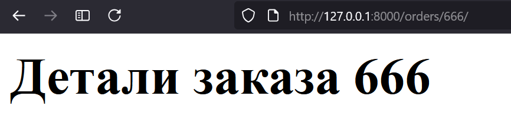

Маршрутизация в Django - это процесс определения того, как URL-адреса сопоставляются с представлениями. В Django маршруты определяются в файле urls.py с помощью списка urlpatterns.
Конвертеры путей - это специальные преобразователи, которые позволяют извлекать значения из URL и передавать их в представления в нужном формате. Они указываются в угловых скобках <> как часть шаблона URL.
[!info]
Синтаксис конвертеров путей ⚙️
Синтаксис конвертеров имеет вид:
<тип:имя_переменной>. Например,<int:order_id>означает, что Django ожидает целое число и сохранит его в переменнойorder_id.
Django предоставляет несколько встроенных конвертеров путей:
| Конвертер | Пример | Значение переменной | Когда использовать |
|---|---|---|---|
int |
orders/<int:order_id>/ |
Целое число | Для числовых идентификаторов |
str |
orders/<str:order_str>/ |
Строка (без /) | Для текстовых параметров |
slug |
orders/<slug:order_slug>/ |
Строка в формате slug | Для ЧПУ-ссылок |
uuid |
orders/<uuid:order_uuid>/ |
UUID | Для уникальных идентификаторов |
path |
files/<path:file_path>/ |
Строка с / | Для путей к файлам |
Конвертер path особенно полезен для работы с файловыми путями. Например, для URL files/anekdoty/GPT/obezianka/ переменная file_path получит значение "anekdoty/GPT/obezianka/".
В Django маршруты определяются в файле urls.py с помощью функции path():
from django.contrib import admin
from django.urls import path
from core.views import landing, thanks, orders_list, order_detail
urlpatterns = [
path("admin/", admin.site.urls),
path("", landing),
path("thanks/", thanks),
path("orders/", orders_list),
path("orders/<int:order_id>/", order_detail),
]
Для главной страницы слеш не ставится, так как это корневой URL. Для всех остальных маршрутов слеши обязательны - это соглашение Django для единообразия URL-структуры.
[!warning]
Единый стиль маршрутов ⚠️
Важно соблюдать единый стиль в написании URL: - Всегда используйте слеши в конце для вложенных маршрутов - Придерживайтесь единого стиля именования (snake_case или kebab-case) - Избегайте смешения разных стилей в одном проекте
Параметры в путях, такие как order_id, передаются в функцию представления как именованные аргументы. Функция order_detail принимает этот параметр и использует его для поиска заказа:
def order_detail(request, order_id):
"""
Отвечает за маршрут 'orders/<int:order_id>/'
:param request: HttpRequest
:param order_id: int (номер заказа)
"""
return HttpResponse(f"<h1>Детали заказа {order_id}</h1>")

На изображении показано, как Django преобразует часть URL в целое число и передает его в представление. Под капотом Django использует регулярные выражения для извлечения и преобразования значений.
order_detail 🛠️Мы добавили датасет в core/data.py и теперь можем использовать его для поиска заказа по order_id. Вот как выглядит обновленная функция:
from .data import orders
def order_detail(request, order_id):
"""
Отвечает за маршрут 'orders/<int:order_id>/'
:param request: HttpRequest
:param order_id: int (номер заказа)
"""
order = [order for order in orders if order["id"] == order_id]
try:
order = order[0]
except IndexError:
return HttpResponse("<h1>Заказ не найден</h1>", status=404)
else:
order_data = f"""<h1>Заказ {order["id"]}</h1><p>Клиент: {order["client_name"]}</p>"""
return HttpResponse(order_data)
Функция теперь проверяет наличие заказа и возвращает 404, если заказ не найден. Однако создание HTML в коде - плохая практика. Это приводит к:
[!info]
Решение проблемы с HTML 🎨
Шаблонизатор Django решает эти проблемы, позволяя: - Разделять логику и представление - Использовать наследование шаблонов - Применять фильтры и теги для форматирования - Обеспечивать безопасность через автоматическое экранирование
В следующей версии мы используем шаблонизатор, передавая данные в контексте:
```python def order_detail(request, order_id): order = [order for order in orders if order["id"] == order_id] try: order = order[0] context = { "order": order, "my_variable": "Hello, world!", } except IndexError: return HttpResponse("